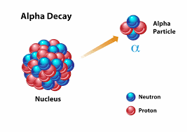
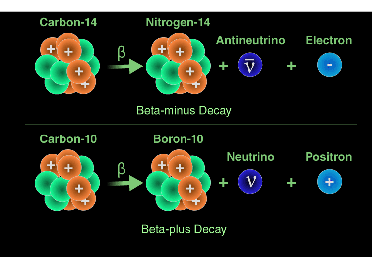
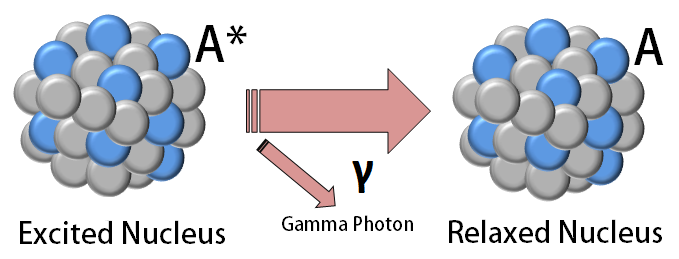

Radioactive decay is a natural process by which unstable atomic nuclei transform into more stable configurations by emitting particles or energy. Each type of decay affects the atomic number and/or mass number differently.
Alpha Decay (α decay)
In alpha decay, the nucleus emits an alpha particle, which consists of 2 protons and 2 neutrons. This reduces the atomic number by 2 and the mass number by 4.
Example: \(\ce{^{238}_{92}U -> ^{234}_{90}Th + ^{4}_{2}He}\)
Beta-minus Decay (β⁻ decay)
In beta-minus decay, a neutron in the nucleus converts into a proton and emits a beta-minus particle (an electron) and an antineutrino. The atomic number increases by 1.
Example: \(\ce{^{14}_{6}C -> ^{14}_{7}N + \beta^- + \bar{\nu}_e}\)
Beta-plus Decay (β⁺ decay / Positron Emission)
In beta-plus decay, a proton transforms into a neutron, emitting a positron (β⁺) and a neutrino. The atomic number decreases by 1.
Example: \(\ce{^{11}_{6}C -> ^{11}_{5}B + \beta^+ + \nu_e}\)
Electron Capture (EC)
In electron capture, an inner orbital electron is captured by the nucleus and combines with a proton to form a neutron. This process emits a neutrino and decreases the atomic number by 1.
Example: \(\ce{^{7}_{4}Be + e^- -> ^{7}_{3}Li + \nu_e}\)

Gamma Emission (γ decay)
Gamma decay often follows beta minus decay when the resulting nucleus is left in an excited state, leading to the emission of a gamma ray (high-energy photon). Gamma emission does not change the atomic number or mass number, whereas beta minus decay does. The example below will help you understand this more clearly.
Example: \(\ce{^{60}_{27}Co -> ^{60}_{28}Ni + \beta^- + \gamma}\)
Summary Table
| Decay Type | Emission | Change in Atomic Number | Change in Mass Number |
|---|---|---|---|
| Alpha (α) | He nucleus (2p, 2n) | -2 | -4 |
| Beta-minus (β⁻) | Electron + antineutrino | +1 | 0 |
| Beta-plus (β⁺) | Positron + neutrino | -1 | 0 |
| Electron Capture | Neutrino | -1 | 0 |
| Gamma (γ) | Gamma photon | 0 | 0 |
Written by Thenura Dilruk